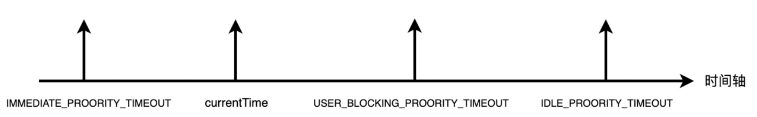
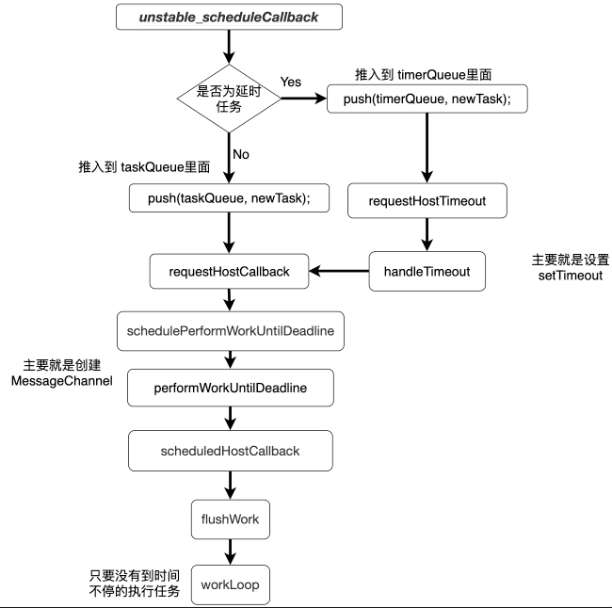

宏观
vue 和 react 的区别
描述页面方式不同
Vue 使用模版来描述页面（UI），React 使用 JSX 来描述页面（UI）
模板语法（vue）的出发点是，既然前端框架使用 HTML 来描述 UI，那么就扩展 HTML 语法，使它能够描述逻辑，也就是“从 UI 出发，扩展 UI，在 UI 中能够描述逻辑”。（扩展模板的语法，类似 ejs 等）
JSX (react)的出发点是，既然前端使用 JS 来描述逻辑，那么就扩展 JS 语法，让它能够描述 UI，也就是“从逻辑出发，扩展逻辑，描述 UI”。（扩展 js 的语法）(类似 XML 形式的 JS 语法糖，由于 JSX 是 JS 的语法糖【本质上就是 JS】，因此可以非常灵活的和 JS 语法组合使用)
虽然这两者都达到了同样的目的，但是对框架的实现产生了不同的影响
当然这两者最后都会编译成虚拟 dom，只是书写形式上有所区别
级别不同
框架都是基于状态的声明式渲染
元素级框架（Svelte、Solid.js）
组件级框架（Vue）
应用级框架（React）
优化不同
react 的优化完全交给用户，vue 在内部实现
vue 和 react 的相同点
diff 算法
虚拟 dom
单项数据流
谈一谈你对前端框架的理解？
在早期使用 jQuery 时代，那时的开发人员需要手动的去操作 DOM 节点；但是随着单页应用的流行，客户端的 JS 代码量出现井喷，此时如果还是采用传统的手动操作 DOM 的方式，对于开发人员来讲有非常大的心智负担。
此时就出现了能够基于状态声明式渲染以及提供组件化开发模式的库，例如 Vue 和 React。这两者本质上仅仅是构建 UI 的库，但是随着应用的复杂度的提升，还需要前端路由方案、状态管理方案，所以有了 vue-router、react-router、vuex、redux 等周边生态产品。
Vue 或 React 和这些周边生态产品共同构成了一个技术栈，现在我们会将 React 或者 Vue 称之为框架，这可以算是一种约定俗成的说法。
一款现代前端框架，在它本身以及它的周边生态中，至少要包含以下几个方面：
基于状态的声明式渲染
UI = f（state）
- state：当前视图的一个状态
- f：框架内部的一个运行机制
- UI：宿主环境的视图描述
支持组件化开发
客户端路由方案
状态管理方案
应用
react 的常用 hook
组件状态：useState
import React, { useState } from "react";
function Counter() {
const [count, setCount] = useState(0);
return (
<div>
<p>You clicked {count} times</p>
<button onClick={() => setCount(count + 1)}>Click me</button>
</div>
);
}
状态管理：useReducer
function Counter() {
const [state, dispatch] = useReducer(reducer, initialState);
return (
<div>
<p>Count: {state.count}</p>
<button onClick={() => dispatch({ type: "increment" })}>Increment</button>
<button onClick={() => dispatch({ type: "decrement" })}>Decrement</button>
</div>
);
}
useEffect
import React, { useState, useEffect } from "react";
function App() {
const [data, setData] = useState([]);
useEffect(() => {
fetch("https://example.com/api/data")
.then((response) => response.json())
.then((jsonData) => setData(jsonData));
}, []);
return (
<div>
{data.map((item) => (
<p key={item.id}>{item.name}</p>
))}
</div>
);
}
原理
React 的架构？新的 Fiber 架构相较于之前的 Stack 架构有什么优势？
简单回答：
Stack 架构在进行虚拟 DOM 树比较的时候，采用的是递归，计算会消耗大量的时间，新的 Fiber 架构采用的是链表，可以实现时间切片，防止 JS 的计算占用过多的时间从而导致浏览器出现丢帧的现象。
通过 Scheduler（调度器）：解决 i/o 优先级问题
通过 fiber(可中断)：解决 cpu 密集计算问题
原理：主要是将任务变成一个链表结构，当发现时间不够的时候去先渲染下一帧，然后再继续任务
React v15 及其之前的架构：
Reconciler（协调器）：VDOM 的实现，负责根据自变量变化计算出 UI 变化
Renderer（渲染器）：负责将 UI 变化渲染到宿主环境中
这种架构称之为 Stack 架构，在 Reconciler 中，mount 的组件会调用 mountComponent，update 的组件会调用 updateComponent，这两个方法都会递归更新子组件，更新流程一旦开始，中途无法中断。
但是随着应用规模的逐渐增大，之前的架构模式无法再满足“快速响应”这一需求，主要受限于如下两个方面：
CPU 瓶颈：由于 VDOM 在进行差异比较时，采用的是递归的方式，JS 计算会消耗大量的时间，从而导致动画、还有一些需要实时更新的内容产生视觉上的卡顿。
I/O 瓶颈：由于各种基于“自变量”变化而产生的更新任务没有优先级的概念，因此在某些更新任务（例如文本框的输入）有稍微的延迟，对于用户来讲也是非常敏感的，会让用户产生卡顿的感觉。
新的架构称之为 Fiber 架构（有点像浏览器的事件循环）
Scheduler（调度器）：调度任务的优先级，高优先级任务会优先进入到 Reconciler
Reconciler（协调器）：VDOM 的实现，负责根据自变量变化计算出 UI 变化
Renderer（渲染器）：负责将 UI 变化渲染到宿主环境中
首先引入了 Fiber 的概念，通过一个对象来描述一个 DOM 节点，但是和之前方案不同的地方在于，每个 Fiber 对象之间通过链表的方式来进行串联。通过 child 来指向子元素，通过 sibling 指向兄弟元素，通过 return 来指向父元素。
fiber 本质是一个对象
function FiberNode(tag, pendingProps, key, mode) {
// ...
// 周围的 Fiber Node 通过链表的形式进行关联
this.return = null;
this.child = null;
this.sibling = null;
this.index = 0;
// ...
}
在新架构中，Reconciler 中的更新流程从递归变为了“可中断的循环过程”。每次循环都会调用 shouldYield 判断当前的 TimeSlice 是否有剩余时间，没有剩余时间则暂停更新流程，将主线程还给渲染流水线，等待下一个宏任务再继续执行。这样就解决了 CPU 的瓶颈问题。
另外在新架构中还引入了 Scheduler 调度器，用来调度任务的优先级，从而解决了 I/O 的瓶颈问题。
是否了解过 React 的整体渲染流程？里面主要有哪些阶段？
React 整体的渲染流程可以分为两大阶段，分别是 render 阶段和 commit 阶段。
render 阶段里面会经由调度器和协调器处理，此过程是在内存中运行，是异步可中断的。
commit 阶段会由渲染器进行处理，根据副作用进行 UI 的更新，此过程是同步不可中断的，否则会造成 UI 和数据显示不一致。
调度器
调度器的主要工作就是调度任务，让所有的任务有优先级的概念，这样的话紧急的任务可以优先执行。Scheduler 实际上在浏览器的 API 中是有原生实现的，这个 API 叫做 requestIdleCallback，但是由于兼容性问题，React 放弃了使用这个 API，而是自己实现了一套这样的机制，并且后期会把 Scheduler 这个包单独的进行发布，变成一个独立的包。这就意味 Scheduler 不仅仅是只能在 React 中使用，后面如果有其他的项目涉及到了任务调度的需求，都可以使用这个 Scheduler。
协调器
协调器是 Render 的第二阶段工作。该阶段会采用深度优先的原则遍历并且创建一个一个的 FiberNode，并将其串联在一起，在遍历时分为了“递”与“归”两个阶段，其中在“递”阶段会执行 beginWork 方法，该方法会根据传入的 FiberNode 创建下一级 FiberNode。而“归”阶段则会执行 CompleteWork 方法，做一些副作用的收集
渲染器
渲染器的工作主要就是将各种副作用（flags 表示）commit 到宿主环境的 UI 中。整个阶段可以分为三个子阶段，分别是 BeforeMutation 阶段、Mutation 阶段和 Layout 阶段。
谈一谈你对 React 中 Fiber 的理解以及什么是 Fiber 双缓冲？
Fiber 可以从三个方面去理解：
FiberNode 作为一种架构：在 React v15 以及之前的版本中，Reconceiler 采用的是递归的方式，因此被称之为 Stack Reconciler，到了 React v16 版本之后，引入了 Fiber，Reconceiler 也从 Stack Reconciler 变为了 Fiber Reconceiler，各个 FiberNode 之间通过链表的形式串联了起来。
FiberNode 作为一种数据类型：Fiber 本质上也是一个对象，是之前虚拟 DOM 对象（React 元素，createElement 的返回值）的一种升级版本，每个 Fiber 对象里面会包含 React 元素的类型，周围链接的 FiberNode，DOM 相关信息。
FiberNode 作为动态的工作单元：在每个 FiberNode 中，保存了“本次更新中该 React 元素变化的数据、要执行的工作（增、删、改、更新 Ref、副作用等）”等信息。
所谓 Fiber 双缓冲树，指的是在内存中构建两颗树，并直接在内存中进行替换的技术。在 React 中使用 Wip Fiber Tree 和 Current Fiber Tree 这两颗树来实现更新的逻辑。Wip Fiber Tree 在内存中完成更新，而 Current Fiber Tree 是最终要渲染的树，两颗树通过 alternate 指针相互指向，这样在下一次渲染的时候，直接复用 Wip Fiber Tree 作为下一次的渲染树，而上一次的渲染树又作为新的 Wip Fiber Tree，这样可以加快 DOM 节点的替换与更新。
React 的 Scheduler 任务调度
该方法主要注意以下几个关键点：
关于任务队列有两个，一个 taskQueue，另一个是 timerQueue
taskQueue 存放普通任务
timerQueue 存放延时任务
任务队列内部用到了小顶堆的算法，保证始终放进去（push）的任务能够进行正常的排序，回头通过 peek 取出任务时，始终取出的是时间优先级最高的那个任务
根据传入的不同的 priorityLevel，会进行不同的 timeout 的设置，任务的 timeout 时间也就不一样了，有的比当前时间还要小，这个代表立即需要执行的，绝大部分的时间比当前时间大。

不同的任务，最终调用的函数不一样
普通任务：requestHostCallback(flushWork)
延时任务：requestHostTimeout(handleTimeout, startTime - currentTime);
整体流程
在调度过程中，Scheduler 用到了 messageChannel 来进行通信

beginWork 工作流程（协调器）
Reconciler（协调器） 是 Render 阶段的第二阶段工作，整个工作的过程可以分为“递”和“归”：
递：beginWork
归：completeWork
beginWork 方法主要是根据传入的 FiberNode 创建下一级的 FiberNode。
在 beginWork 会根据是 mount 还是 update 有着不一样的流程。
如果当前的流程是 update，则 WorkInProgressFiberNode 存在对应的 CurrentFiberNode，接下来就判断是否能够复用。
如果无法复用 CurrentFiberNode，那么 mount 和 update 的流程大体上是一致的：
根据 wip.tag 进入“不同类型元素的处理分支”
使用 reconcile 算法生成下一级 FiberNode（diff 算法）
两个流程的区别在于“最终是否会为生成的子 FiberNode 标记副作用 flags”
在 beginWork 中，如果标记了副作用的 flags，那么主要与元素的位置相关，包括：
标记 ChildDeletion，代表删除操作
标记 Placement，代表插入或移动操作
最小堆算法
React 中哪些地方用到了位运算？
位运算可以很方便的表达“增、删、改、查”。在 React 内部，像 flags、状态、优先级等操作都大量使用到了位运算。
细分下来主要有如下的三个地方：
- fiber 的 flags
- lane 模型(优先级机制)
- 上下文（当前执行到了哪个阶段）
React 语法
useMemo 就是定义一个没有副作用的因变量
const y = useMemo(() => x * 2 + 1, [x]);
可以使用 useEffect 来定义一个有副作用的因变量
useEffect(() => (document.title = x), [x]);
虚拟 dom
在 React 中，通过 JSX 来描述 UI，JSX 仅仅是一个语法糖，会被 Babel 编译为 createElement 方法的调用。该方法调用之后会返回一个 JS 对象，该对象就是虚拟 DOM 对象，官方更倾向于称之为一个 React 元素。